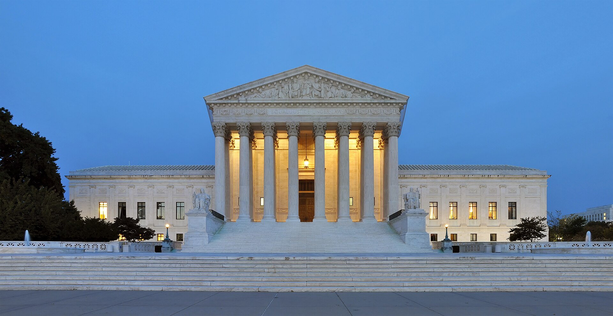
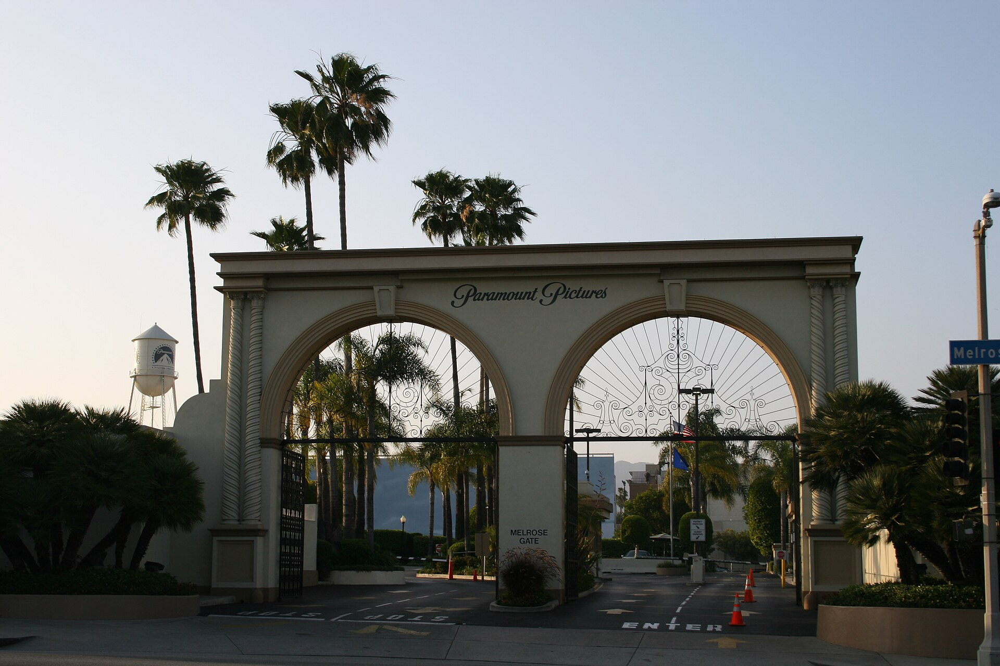

Vol. I · No. 170 · Saturday, November 14, 2026 · 13 items · 9.8 min read
The FAA halts every departure for four hours and looks hard at its new AI tool, the SEC proposes a new pay table, wholesale prices and the two-year yield jump together, and the Supreme Court takes Robinhood’s IPO.
AI · Washington · cross-spectrum: LLLC
A four-hour nationwide ground stop puts the FAA’s new AI routing tool under review, and Duffy blames copper lines and overloaded routers
Controllers at the FAA’s Washington Air Route Traffic Control Center. U.S. Federal Government, public domain / Wikimedia Commons
The Federal Aviation Administration halted departures nationwide at 3:54 p.m. Eastern on Friday after radar and communications failures spread across control centers, and lifted the order at 8:15 p.m., Transportation Secretary Sean Duffy said. About 3,500 planes were airborne when it began. It was the second nationwide ground stop since Sept. 11, 2001, ABC News reported; the last came in January 2023, when the system that issues notices to pilots failed.
But you will have more of these. You will have more of them unless the American people and the Congress tell us to build.
Sean Duffy, White House briefing, Nov. 13
The halt came three days after the FAA extended , an AI system built to forecast congestion, to all 22 of its en route centers, where it advises controllers on routing. Homeland Security Secretary Markwayne Mullin said the department was ‘looking at’ any link and saw no sign of a cyberattack. ‘It doesn’t appear that way,’ he said, while declining to rule one out. , which built it, said the stop ‘is not based on or a result of the SMART system.’
Duffy ruled the tool out, saying it only recommends routes and does not touch the . He blamed switches and routers that ‘actually got overloaded with data’ and asked Congress for , saying he expected flights to be ‘back up and operational’ heading into Thanksgiving. Cirium counted at least 827 diversions by early evening, AVweb reported. Sen. Maria Cantwell said the Commerce Committee would review the failure, and said she would demand answers.
Markets & Deals · Washington
The SEC proposes cutting proxy pay disclosure to the chief executive and finance chief, and raising the perks threshold to $150,000
The Securities and Exchange Commission on Friday proposed the broadest rewrite of since 2006, shrinking the named executive officers in most proxy statements from five or more to the principal executive and financial officers. Three new tables, for earned pay, granted pay and the status of equity awards, would replace the four primary tables, and the threshold for reporting perquisites would rise to $150,000 from $10,000.
The pay ratio would be computed from U.S. full-time employees only, with the median worker re-identified every five years instead of three. Pay-versus-performance would drop and companies filing an S-1 would get up to 120 days after fiscal year-end to supply pay data, according to Cooley’s summary of the 542-page release. Atkins called it the toward disclosure based on materiality. Comments run 60 days after Federal Register publication.
Markets & Deals · New York
Anthropic’s IPO book is said to be six times covered, as banks turn away orders from mainland China and Hong Kong
Orders for Anthropic’s initial public offering reached about six times the shares on offer by the end of Thursday, up from about twice after the roadshow’s first day, Reuters reported, citing people familiar with the deal. The company aims to raise up to $64.4 billion in the listing alongside a $26 billion private placement, with pricing expected Wednesday and trading on Nov. 19. Several underwriters rejected or set aside orders from mainland China and Hong Kong, Bloomberg reported, some citing .
Speaking with JPMorgan’s Jamie Dimon at the bank’s Manhattan headquarters on Friday, chief executive Dario Amodei called compute ‘the deepest business dilemma that the company faces.’ The latest filing shows nearly , mostly for compute and chips, about $71 billion of it due in the year to Sept. 30, 2027. estimates the 19 banks will share about $395 million in fees. ‘We want to underpromise and overdeliver,’ Amodei said.
AI
A Canadian court keeps OpenAI, and actors want takedowns
AI · Toronto
Ontario’s top court rules OpenAI must face Canadian news publishers’ copyright suit at home
Osgoode Hall in Toronto, seat of the Court of Appeal for Ontario. Thomas1313, CC BY-SA 4.0 / Wikimedia Commons
The Court of Appeal for Ontario on Friday unanimously dismissed OpenAI’s challenge to its jurisdiction over a suit by Torstar, Postmedia, The Globe and Mail, The Canadian Press and CBC/Radio-Canada, upholding Justice Jessica Kimmel of the Superior Court. OpenAI argued the alleged copying took place beyond Canada’s reach. ‘Ontario has a to the alleged breaches,’ Justice B.W. Miller wrote. The publishers plead copyright infringement, breach of their sites’ and unjust enrichment. OpenAI owes $100,000 in costs.
AI · Lisbon
SAG-AFTRA’s chief negotiator says performers want AI fakes taken down far more often than they want to sue
Duncan Crabtree-Ireland, national executive director of SAG-AFTRA, told a Web Summit audience in Lisbon that ‘90-plus percent of the time’ members whose likeness is misused want it removed rather than litigated, Deadline reported. He backed the : ‘What it’s really about is getting platforms to take stuff down when your image, likeness and voice is being used without your permission.’ He said 10 to 15 percent of members want the union to refuse AI entirely, and described his own likeness being misused during the .
Markets & Deals
Wholesale prices jump, the curve lurches, and REIT holders say no
Markets & Deals · Washington
Producer prices rise 6.5 percent from a year earlier, the most since 2022, and the two-year yield ends the week 32 basis points higher
The Eccles Building, the Federal Reserve’s headquarters in Washington. Federal Reserve, public domain / Wikimedia Commons
The producer price index for final demand rose , below the 0.4 percent economists expected, but 6.5 percent from a year earlier, the largest 12-month gain since November 2022, the Bureau of Labor Statistics said Friday. Goods prices rose 10.2 percent over the year. Prices excluding food, energy and trade services rose 0.5 percent on the month and 4.9 percent on the year.
Treasury’s par curve closed with the two-year note at 4.88 percent, up from 4.56 percent on Monday, the 10-year at 5.15 percent and the . Futures priced a December rate increase as close to certain, with the debate now between a quarter point and a , according to CME FedWatch data cited by ActionForex. The S&P 500 fell 0.4 percent to 7,561.67 and the Nasdaq 0.9 percent.
Markets & Deals · Toronto
H&R REIT unitholders reject a C$6.7 billion breakup backed by Blackstone and the chief executive’s family
Unitholders of H&R Real Estate Investment Trust on Friday voted down a plan of arrangement under which GO Residential REIT, backed by Blackstone Real Estate, Crestpoint, PSP Investments and an affiliate of chief executive Tom Hofstedter, would have broken up the trust. The deal needed two-thirds of votes cast and a . H&R ended the agreement with no fee owed, restored its monthly distribution and plans a of about C$2.30 a unit before year-end, asset sales and up to four new trustees.
Law & the Courts
Robinhood’s IPO reaches the Court, and Weil liquidates
Law & the Courts · Washington
The Supreme Court will decide whether Robinhood’s IPO documents had to disclose a quarter it had not yet reported

The west facade of the Supreme Court in Washington. Joe Ravi, CC BY-SA 3.0 / Wikimedia Commons
The Supreme Court on Friday agreed to hear Robinhood Markets v. Sodha, No. 25-944, which asks whether an issuer can be liable under the Securities Act of 1933 for omitting without any showing that the omission made an . Investors led by Vinod and Amee Sodha say the offering documents hid a shift in revenue toward meme stocks and dogecoin. The Ninth Circuit revived the suit in August 2025 after Judge Edward Chen dismissed it.
The backed Robinhood. Jeffrey Wall of Gibson Dunn represents the company; Deepak Gupta and Amanda Lawrence represent the investors. Argument is likely in the spring. The same conference added Mullin v. RAICES, the administration’s appeal of rulings against its proclamation suspending asylum at the southern border, which stays in force; the Court declined to review the class certification.
Law & the Courts · New York
Weil’s partners adopt a plan of liquidation as Gibson Dunn takes its 120-lawyer private funds group
Partners of Weil, Gotshal & Manges voted on Friday to adopt a and named Ben Schrag and James Mesterharm co-chief restructuring officers, Reuters reported. Gibson Dunn said the same day it is taking Weil’s 120-lawyer , including 23 partners in New York, Washington and London and co-managing partner Jonathon Soler, from January, the ABA Journal reported. Kirkland is taking about 40 Weil lawyers. ‘This is the most sought-after cross-border funds team in the market,’ said Gibson Dunn’s Shukie Grossman.
The World
A tanker burns in Hormuz, and Europe names its negotiators
The World · Strait of Hormuz · cross-spectrum: LLCR
An LNG tanker strikes a mine in Hormuz, Iran says, and Bessent says threats moved him onto a military base
A U.S. Navy frigate passes a tanker after transiting the Strait of Hormuz in 1990. U.S. Department of Defense, public domain / Wikimedia Commons
Iran’s Revolutionary Guard navy said through state media that a liquefied natural gas tanker hit a and exploded in the Strait of Hormuz on Friday on what it called an unauthorized route; it named no vessel and gave no casualties, Reuters reported. The U.S. military says it has cleared the strait’s routes of mines. Treasury Secretary told CNBC he had moved from his home to a military base on Secret Service advice and called Iran ‘like a dangerous cornered animal.’ Brent settled at $96.21.
The World · Dublin · cross-spectrum: LC
Europe names Britain, France, Germany, Italy and Poland to its Ukraine negotiating team, and the Kremlin withholds a seat
European Union leaders meeting informally in Dublin agreed that the E5, made up of Britain, France, Germany, Italy and Poland, will represent Europe alongside EU institutions at the of Ukraine talks, expected in Abu Dhabi next week, RTÉ reported. Kremlin spokesman Dmitry Peskov said Moscow had not agreed to include them and would decide ‘once we understand their genuine intention and readiness to contribute to the peace process.’ , the EU’s foreign policy chief, is not on the team. Leaders take up Ukraine’s financing at a summit on Nov. 26 and 27.
Entertainment & EASL
A merger back in court, and a $625 million club
Entertainment & EASL · Los Angeles
Subscribers refile an antitrust suit seeking to unwind Paramount’s purchase of Warner Bros. Discovery

The Melrose Avenue gate of Paramount’s Hollywood lot. Chris Brown, CC BY 2.0 / Wikimedia Commons
A group of consumers has in California federal court asking a jury to unwind Skydance’s Paramount acquisition of Warner Bros. Discovery, or to force the sale of HBO Max, CNN and the Warner studio, and to keep Paramount+ and HBO Max apart, The Hollywood Reporter and TheWrap reported Friday. The complaint cites the bundle planned for early 2027 and a target of at least $6 billion in annual savings. ‘That choice between independent sellers has been eliminated,’ it says.
Entertainment & EASL · San Jose
John Fisher sells the San Jose Earthquakes and PayPal Park to Heath Freeman for $625 million
Fisher, who is moving the Athletics to Las Vegas, agreed to sell Major League Soccer’s San Jose Earthquakes, including the privately financed PayPal Park, to Heath Freeman, co-founder of the hedge fund , at an enterprise value of , ESPN reported Friday, confirming Sportico. Freeman is buying as an individual, not through Alden, the San Francisco Chronicle said. MLS owners approved the sale unanimously, and Moelis ran a process that began in June 2025. Fisher and Lew Wolff paid a $20 million expansion fee in 2007.
Compiled by Matthew Yellin · mattyellin.com · Est. May 2026 · A cross-spectrum brief drawn each morning from wires, filings, and the trade press